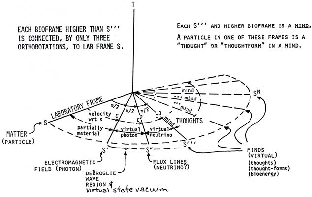

|
A New View of the Nature of Mind and Thought The reason that Western science has not discovered what mind and thought are is simple: They have only built instruments and tools to look where the mind and thought are not to be found. Let's look where they are to be found. For example, consider the ionic discharges in and across the tremendous numbers of synapses of the human nervous system, and the slower discharge and migration of ions across cellular membranes, etc. Considered as a single biological ensemble, these are much like a vast array of continual and continuing spark discharge vectors, slow charge current vectors, etc. Overall, within the macroscopic space occupied by the body, these electromagnetic vectors sum almost entirely to a zero vector resultant. Only a tiny nonzero vector residue remains. However, this vector zero summation has incredibly rich infolded signals, channels, and dynamic relationships (structure) within it. Modern science/medicine measures the small nonzero electromagnetic residue (the remaining weak E and H fields) and tries to ascertain where and how mind and thought are accomplished, by studying that residue. However, the residue E and H field remainders are simply the "garbage thrown out" of the glorious engines dynamically operating inside the vector zero summations (and multiplications). The E and H field residues are the wastes or exhaust byproducts. They are not the functions of the mind thought process itself; instead, they are the spillage or leakage from those functions. Take a "frozen time" snapshot of the components of the zero vector summation. Regard the highly complex, infolded structure or pattern these components form. Now take a second "frozen time" snapshot of the components of the zero vector summation, a very, very short time later. Subtract the previous "frozen pattern" from this second "frozen pattern."* *Similar to the magnificent "double exposure holography" work of Dr Robert Powell. The difference or "delta" between the two patterns represents a myriad of thoughts, hence it represents the contents of the "thinking mind," in the most general sense. The "mind" is the overall functioning and changing of the entire pattern's substructure, and the ability of an organism to have such and do such. The "ability of the organism to do such" requires at least two more nested levels of virtual state—two more hyperdimensions. In simplest Kaluza-Klein theory, all those electromagnetic component vectors are in the fifth dimension. Hence they are hyperdimensional The zero-vector system may well have further infolded, internested levels of zero-vector systems. Systems within systems. These are hyperspatial, going into the 6th, 7th, 8th, etc. dimensions. Rife's microscope, for example, could reveal some of these levels; using evanescent waves, it could resolve some 16 ever-deeper levels of dynamic energy structure. Everything driving the component vectors themselves is higher dimensional. |

|
Figure 76. Hyperframes, vacuum, virtual state, minds and thoughts. "A thought" is the exact change of a localized pattern (localized zero vector summation whose components are changing but remaining zero summed) from one moment to the next. Thought is always a pattern change, of the components inside an EM vector zero summation. Most thoughts are totally "unconscious" (multiple simultaneous or "parallel" thoughts). A few are conscious (serially ordered, singularly considered and processed). The unconscious mind is totally a parallel processor (many things/thoughts at once). The conscious mind is totally a serial processor (only one thing/ thought at a time). Most persons never take the time and trouble to reflect and notice that, consciously, they only can perceive one single thing at a time. Of course, the conscious mind is so rapid that by habit they assume they can perceive many things at once. Since the conscious mind cannot discriminate the "multiple images in the slide projector at once" of the unconscious mind, that's what makes it unable to "be conscious" of the contents of the "unconscious." In fact, the unconscious mind is totally conscious—it's just multiply conscious "simultaneously." (Which sheds some interesting light on why one can develop multiple personalities, for instance). When the conscious mind "regards" the unconscious contents, it sees "something" which has "multiple meanings at once." That's what we call symbolic. A symbol is something which can have many meanings at once. That's why the unconscious content always "symbolizes" something when it's trying to communicate to the conscious mind. It's necessary to interpret the symbols to understand what the message being communicated is. That's why dreams, for instance, are symbolic. And why it usually takes a trained psychiatrist or psychologist to properly interpret the symbolic representations manifested in mental disorder, and get at the underlying cause being symbolized. With deliberately constructed scalar EM, any or all of the conscious/unconscious portions of the mind can be available for engineering and control/change. Eventually you will be able to put contents of the mind and memory on a video screen if you wish to. It will also be possible to interact with the mind's contents electromagnetically. Mental illness will be treated directly, on an engineering basis. Of course this opens up the frightening possibility of hostile misuse to the detriment of an individual. It will even be possible to change or erase his or her very personality itself. We pray, of course, that such a powerful tool will not be utilized this way, but will be used to heal humans, not hurt or kill them. Unfortunately, Lisitsyn's work reveals that the Soviet Union has long since applied energetics (scalar electromagnetics) to mind control and mind engineering, including deciphering the genetic code operation. Controlled induction of images and sensations inside the brain—where they are processed as if self-originated— has been reported by the Soviets. Indeed, they have reported being able to control whether or not the induced material should rise to conscious awareness, as well as when it should rise to consciousness. For years, U.S. intelligence analysts and U.S. scientists simply did not believe that electromagnetic signals could directly influence consciousness. However, they were forced to reevaluate that position when a Soviet medical machine—the LIDA device—was openly obtained and evaluated. The LIDA machine—a small unit somewhat larger than a briefcase—has been used in Soviet medical facilities to treat humans for decades. The device uses a 40 megahertz EM carrier and very complex waveforms (signal modulations with complex mixtures of frequencies, phases, etc.) When exposed to it, a person is caused to gradually fall into a trance-like, catatonic-like state within a few minutes. That person becomes very still and very quiet. It was reported that the machine was tested upon a cat and had the same effect upon it. One American scientist stated that the device had actually been used in North Korean "brainwashing' of U.S. prisoners of war in the early 1950's during the Korean War! If so, one can see just how long the Soviets have achieved success with electromagnetic biological warfare/medical treatment techniques. Reportedly, prisoners exposed to the machine were rendered unable to psychologically resist their harsh brainwashing interrogation. But to return to the brain activity, with its innumerable, zero-summed minute EM vectors, and its extremely rich and complex deterministic substructure. Note that the ensemble of sum-zeroed vectors forms potentials. These potentials—i.e., the scalar EM—penetrate to the atomic nuclei in the brain and body. Internal changes in the potentials' substructures (i.e., thoughts) also penetrate to the nuclei. The nuclei continually "charge up" (the particles change their states) to these impressed potentials, including the "potential" or "charge" of each component of the impressed potential. That is, the nuclei charge up with both dynamic overall potential (mind) and thought (individual substructure changes). Notice that mind, thought, and memory reside in, and are recorded in, the atomic nuclei. At many virtual state levels. In many hyperdimensions. Thus the functioning mind and bio-control systems—including Popp's master cellular communication system, the immune control system, the acquisition control system, and the repair control system —all "reside" in the nuclei as dynamically interacting, patterned potentials or "patterned charge," complete with resonances and frequencies, etc. We can regard the mind and its interactions as physical, in the extended sense we have briefly developed here. Everything "mental" can be directly interfaced with and engineered. One day, for example, "education" will be by direct loading of patterns into the brain body/cellular biopotentials, much as we now place a diskette in a disk drive and load the computer memory. And then everyone can be educated, in the widest range of skills and to the highest degree ever dreamed of. |